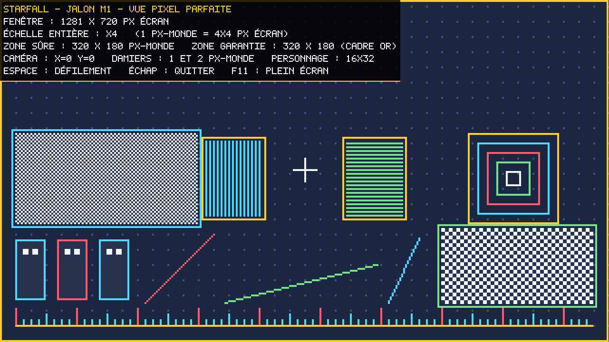
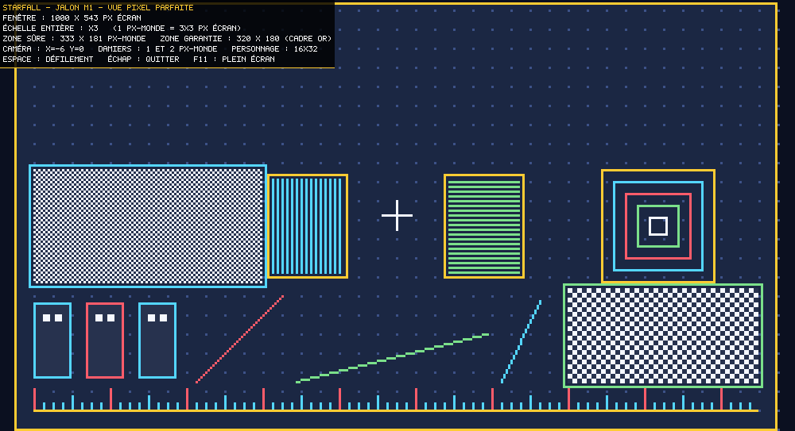

STARFALL
Décisions verrouillées
| Identité | Hommage assumé à Shogun Showdown. Pas de réinterprétation onirique. |
| Périmètre | Tranche verticale finie : 1 héros, 1 biome, 3–5 vagues puis 1 boss, ~10–12 tuiles, ~4 types d'ennemis.Tout ce qui est dedans est terminé au niveau de la barre de review — plutôt que beaucoup de contenu brouillon. |
| Moteur | libGDX, Java 25 (Temurin détecté), LWJGL3 desktop, wrapper Gradle embarqué. |
| Art | Pixel art authorié comme source texte : grilles de caractères indexées sur une palette, converties en atlas PNG par une étape de build.Versionnable, relisable, et modifiable entre deux passes de review — contrairement à des PNG opaques. |
| Résolution | Taille de pixel fixe (personnages 32 px), viewport qui s'adapte. Pixels carrés et nets à toute taille de fenêtre ; fenêtre redimensionnable et plein écran. |
| Entrées | Clavier et souris, les deux de plein droit. |
| Grille | Largeur configurable de 5 à 15 cases. |
| File d'actions | 5 tuiles (au lieu de 3 dans la référence). Exécution dernier-entré → premier-sorti.Seul écart mécanique délibéré vis-à-vis de la référence. Voir « Points d'attention » plus bas. |
| Fidélité | Boucle centrale exacte : file LIFO, recharges en points, tuiles Free-Play, intentions ennemies télégraphiées, traits (Agressif / Rapide / Explosif / Fonceur), combo kills. Contenu original, mais archétypes calqués sur la référence : héros de type Vagabonde (échange de place), ennemis mêlée / chargeur / distance / agressif, boss qui invoque et charge. |
| Audio | Aucun. |
| Langue | Textes et interface en français. Hypothèse à confirmer : identifiants de code en anglais (convention Java), commentaires et docs en français. |
| Boucle de review | Agent de review indépendant, contexte neuf, aucun lien avec l'agent qui a produit le code. Maximum 3 passes par item, puis l'objection non résolue est consignée dans « Besoin de ton avis » et on avance. |
| Versionnement | Branche asblack sur github.com/geleouet/starfall, commit à chaque jalon revu.main était vide (« Start over: main reset to an empty state ») — la branche part donc d'une base propre. |
Jalons
| État | Jalon |
|---|---|
| revu | M1 — Squelette et amorçagelibGDX 1.14.2, Gradle 9.6.1, toolchain Java 25, viewport à échelle entière, scène de test, capture PNG automatisée. Review indépendante passée : elle a conclu « M1 ne tient pas ». Défaut central corrigé, 85 tests verts sur 12 suites (contre 26 sur 5). Voir le journal de review. |
| revu | M2 — Harnais de captureAvancé et replié dans M1 : --screenshot <dir> --size WxH --frames N rend puis quitte proprement, sans intervention humaine. Durci après review : refuse désormais de faire croire au succès quand la fenêtre obtenue n'est pas celle demandée, quand une option est mal orthographiée, ou quand les images seraient toutes identiques. |
| suivant | M3 — Pipeline pixel artFormat source des sprites, palette, générateur d'atlas, rendu à l'écran. |
| à venir | M4 — Grille et hérosGrille 5–15, déplacement, orientation, capacité spéciale, cadrage caméra selon la largeur. |
| à venir | M5 — Système de tuilesFile de 5, exécution LIFO, recharges, Free-Play, ajout / retrait sans coût de tour. |
| à venir | M6 — Ennemis et intentions4 archétypes, traits, IA de file, bulles d'intention télégraphiées. |
| à venir | M7 — Résolution du combatDégâts, statuts, collisions et repoussements, combo kills, enchaînement des vagues. |
| à venir | M8 — InterfaceHUD, barre de file, portées d'attaque, PV, infobulles — en français. |
| à venir | M9 — BossRencontre finale de la tranche : invocations, combo charge + frappe. |
| à venir | M10 — Équilibrage file de 5Réaccordage complet des recharges et de la pression ennemie autour de la file élargie. |
En cours de construction
Comment le lancer
| Jouer | run.bat (double-clic) ou gradlew.bat :lwjgl3:run |
| Capturer | run.bat --screenshot captures\m1 --size 1280x720 --frames 2Image 0 au repos, images suivantes caméra en mouvement. Reproductible d'une exécution à l'autre. |
| Aide | run.bat --help |
| Contrôles | Espace : défilement · Échap : quitter · F11 : plein écran |
| Codes de sortie | 0 succès · 1 plantage · 2 ligne de commande invalide · 3 capture non conforme à la taille demandéeTout ce qui n'est pas 0 doit faire échouer la boucle de review, jamais passer inaperçu. |
Planches-contact
M1 — même scène de test à cinq tailles de fenêtre, dont deux volontairement bâtardes. Toutes les images ont été régénérées après correction. La première image de chaque capture est cadrée au repos ; les suivantes montrent la caméra en mouvement sur des cibles fractionnaires — auparavant les --frames N étaient N copies bit à bit du même rendu.

(0,4) (424,4) (556,4) …, toutes exactement 4 px, la première comprise.


Journal de review
Relecteur en contexte neuf, aucun lien avec l'agent qui a écrit le code. Il a relu tous les fichiers, rejoué le build et les tests, écrit ses propres sondes, décodé les PNG livrés pixel par pixel et relancé le harnais à plusieurs tailles. 12 défauts confirmés, dont deux qui contredisaient frontalement ce que M1 affichait.
1. La zone garantie 320×180 était rognée. Le monde était arrondi vers le haut puis centré, ce qui coupait en deux la colonne de pixels de chaque bord — sans rien garantir sur le fait que la colonne coupée soit en dehors de la zone garantie. En 1281×720, la colonne monde x=0 n'était affichée que sur 2 pixels écran au lieu de 4. Les quatre captures livrées passaient toutes à côté du cas.
Vérifié moi-même avant d'accepter l'objection : échelle 4, monde arrondi à 321, origine écran −2, caméra à 0 — la zone garantie se retrouvait plaquée contre le bord coupé. Corrigé en séparant la zone sûre (entièrement visible, jamais rognée) de la zone dessinée (qui déborde d'une colonne de chaque côté uniquement pour boucher les gouttières). Le test qui manquait vérifie désormais la garantie en pixels écran et non en pixels calculés — c'est exactement par ce trou que le défaut passait.
2. Le harnais de capture pouvait mentir en sortie 0. Une demande de 3000×2000 produisait un PNG en 2884×1770 sans un mot, code de retour 0. Une faute de frappe (--frame au lieu de --frames) était signalée sur stderr puis ignorée, et produisait 2 images au lieu de 5, toujours en sortie 0.
Corrigé : l'analyse de la ligne de commande est stricte (toute option inconnue, valeur manquante ou valeur absurde est fatale, code 2) et le harnais compare la fenêtre obtenue à la fenêtre demandée (code 3 et message explicite en cas d'écart). Pour une boucle de review automatisée, un faux positif silencieux est le pire défaut possible.
Les dix autres, tous corrigés : le panneau d'interface recouvrait 48 % de la zone garantie à 320×180 — la taille minimale que le lanceur impose lui-même — alors qu'un commentaire affirmait le contraire ; --frames N écrivait N copies bit à bit de la même image ; les PNG n'étaient pas opaques (42 % des pixels à alpha 217, donc d'apparence variable selon le fond du visualiseur) ; écrasement et fichiers périmés silencieux ; débordement entier sur les tailles absurdes ; caméra non initialisée par le constructeur ; --help affichait l'aide puis ouvrait quand même une fenêtre ; API dépréciée ; double calcul de projection dont un sans garde-fou ; et les commentaires étaient en anglais alors que la convention du projet les veut en français — seul point de la convention qui était inversé, maintenant rétabli sur tous les fichiers.
Trous de test comblés. Le rapport notait que PixelViewport, LaunchOptions et PixelFont n'avaient aucun test, et que le balayage d'invariants avançait de 7 en largeur et de 11 en hauteur — il ne visitait donc ni 1281 ni 1281×721. On passe de 26 tests sur 5 suites à 85 sur 12, avec un balayage au pas de 1 sur 2000×1200 tailles de fenêtre.
Je n'ai pas pris le rapport pour argent comptant, et je n'ai pas non plus pris mes propres correctifs pour acquis. Ce qui a été re-mesuré sur les images produites après correction :
- Le défaut central est bien mort. En 1281×720, le bord gauche du cadre or passe de 2 px à 4 px. Sur ~40 000 plages de couleur mesurées dans la zone de jeu (images au repos et caméra en mouvement, en ×3 et en ×4), zéro n'est un non-multiple de l'échelle.
- Opacité : les captures ne contiennent plus que de l'alpha 255.
- Images distinctes mais reproductibles : les 3 images d'une série ont 3 empreintes différentes, et deux exécutions successives donnent des empreintes identiques deux à deux.
- Panneau d'interface à 320×180 : le damier d'1 px est de nouveau visible sur toute sa hauteur (y=62 à 109) ; il était masqué à partir de y=94.
- Bout en bout : taille non tenue → code 3 et message d'erreur ; option mal orthographiée → code 2, aucune image écrite ;
--help→ aide puis arrêt, sans fenêtre. - Fenêtre réelle ouverte et fermée pour de vrai — pas seulement les captures. Elle n'avait jamais été inspectée.
Build propre en sortie 0, sans avertissement de compilation, 85 tests verts sur 12 suites.
Besoin de ton avis
| à trancher | File de 5 : conséquence mécaniquePasser de 3 à 5 emplacements change beaucoup l'économie de tours : plafond de combo bien plus haut, engagement plus long, et davantage de tours passés à charger la file en étant vulnérable. Je vais recalibrer les recharges et la pression ennemie autour de ça plutôt que de reprendre les chiffres de la référence — mais si tu voulais 5 emplacements avec l'équilibrage d'origine, dis-le maintenant, ça change le jalon M10. |
| signalé | M1 — points non couvertsAucun n'est bloquant, mais autant que tu les saches : le plein écran (F11) est implémenté mais n'a jamais été testé automatiquement ; LWJGL est épinglé en 3.3.6 au lieu du 3.3.3 livré par libGDX, pour supprimer un avertissement JNI sous JDK 25 ; aux tailles non multiples, une colonne de débordement de moins d'un pixel-monde est visible sur les bords au lieu d'afficher des bandes noires — choix délibéré, et désormais explicitement en dehors de la zone garantie ; enfin run.bat renvoie le code 1 de Gradle et non le code 3 du jeu quand une capture n'est pas conforme (le message d'erreur, lui, est explicite). |
| à trancher | Français dans le codeLa review a relevé que 100 % des commentaires étaient en anglais alors que la convention annoncée les veut en français : c'est corrigé, tous les fichiers sont repassés en français. Reste ta décision sur les identifiants, que j'ai laissés en anglais (convention Java) : PixelViewport, safeWorldWidth, drawWorld()… Si tu les veux en français, il faut le dire avant M4 — après, c'est un renommage massif. |